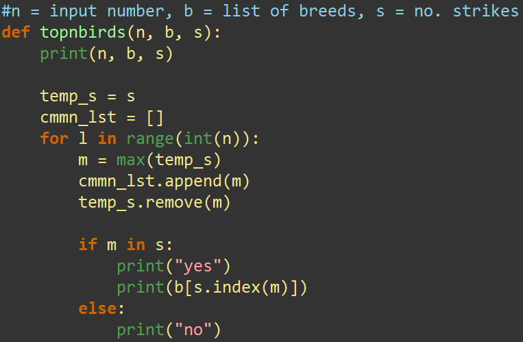
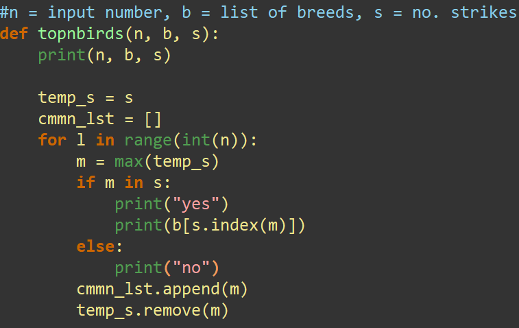
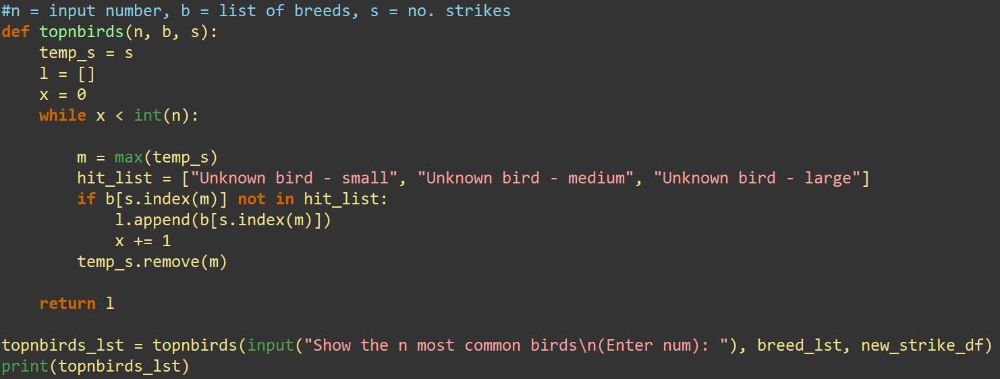

Computer Science Project 2024
Name of Project
Exam Number:0000000000
4 Create (approximately 850 words)
| Week | Detail |
|---|---|
| Week 1 |
Research
Python - Simple data cleaning test to ascertain quality of dataset (happy) |
| Week 2 |
|
| Week 3 |
|
| Week 4 |
|
| Week 5 |
|
| Week 6 |
|
| Week 7 |
|
| Week 8 |
|
| Week 9 |
|
| Week 10 |
|
| Week 11 |
|
Unit Testing
You should explain and detail some unit testing which has taken place during the development process.
This is testing of a function within your
code - invalid values, extreme values etc.
Maybe have a test table along with it.
Problems Encountered
In Iteration 2 (I2) of my python code to clean and process the data, I encountered an issue with list indexing. This happened in my function topnbirds() in which my plan was to print out the top n most common birds in the dataset (lists already made and cleaned for use in I1). I created a temporary list(temp_s) to store the unsorted list of strike numbers (important that this list "s" remains unsorted to make sure each on corresponds to the same index number as the breed it represents in my 2 lists (lists are called "b" and "s" within the function)). I then start a loop of length n that finds the largest element in temp_s, stores it in a list (cmmn_lst) and then removes the value from temp_s. This way, by using b[s.index(m)] it will get the index position of the max value of temp_s and print the value of that index position in the list (essentially printing the "x"th common bird species, where it stops at the value of n that the user inputted). This failed to work however because according to the error message, the value m (max value in temp_s) did not exist in the list s
My first port of call to iron this out was to run a quick check to see if m was in the main list s at any point during the loop. Of course it outputted "no" each time, proving that I was trying to acces a list element that wasn't there at all each time. This confused me greatly because in my mind, the value of m was taken from an exact copy of this list so therefore it should be in the main list s. I then thought that if I made that check before the .append and .remove functions, I might see something different. 
 Lo and behold, my check outputs yes and successfully prints the top 3 most common breed names (element in list b of the same index position as the nth max value in the list s). But when I run my code, it does technically as intended (print the top n most common breeds) but there was something that I didn't foresee that came up in the shell. In the dataset there are multiple entries where the breed was listed as "Unknown bird - small" or 'Unknown bird - large' etc. Unfortunately most of the top breeds were unknown so they had to be cleaned out to give me names of breeds I could use. My thinking was that I could use a while loop instead of the for loop I was using and make a dedicated count variable. By making this variable, it grants me the opportunity to add or take away loop iterations based on the incoming data ie if the breed is one of the unknowns, it won't append to the list or increment my count variable to make sure that n elements are in the list at the end.
Working Code 
Code Explained
An explanation of a piece of code or algorithm that was important in the development of the project. Screenshot it and explain how it works.
Again you could use multiple snippets of code.
Try to pick something that is important to the system.